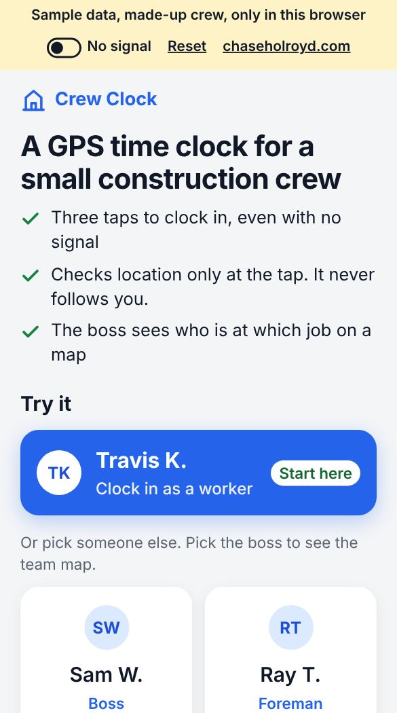
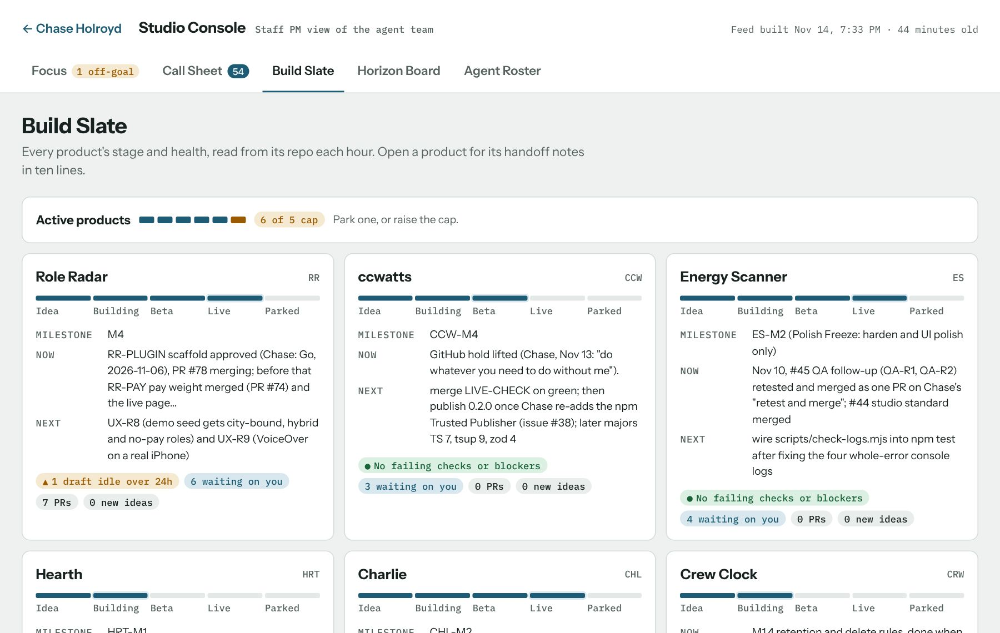

Building
What I’m building with Claude Code
Six products in progress. I scope the work, write the rules and approve every merge.

One builder can’t also be the tester, the reviewer and the privacy check.
A shared team of Claude Code agents that every one of my projects installs: a staff PM that scopes the work, a tester that writes the failing test first, an engineer, a UX reviewer, and a privacy and security reviewer. A check on each pull request fails if an agent is named but did not really run.


Most stock ideas ignore what you already know.
It reads a resume, finds the industries the person knows, scores companies with a Charlie Munger style checklist, and suggests one to three practice trades a day. Every trade shows the most you could lose. It never places a real order.


The few roles worth applying to are spread across many job boards.
A radar I built for my own search. It reads job boards every weekday and scores each role from 0 to 100 against criteria I edit, with the reasons on every card. Applying stays my call.